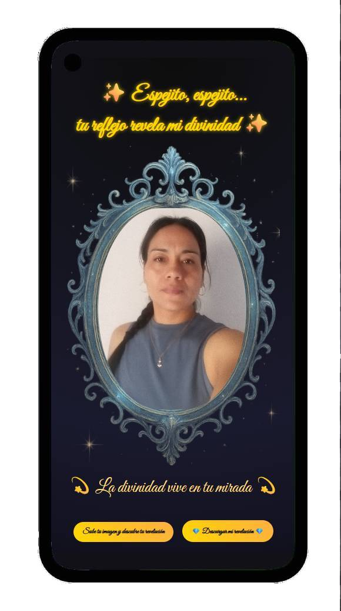

Experiencia visual e interactiva que revela un mensaje simbólico a través de un espejo digital. Combina geometría sagrada, arte y reflexión personal para invitar al usuario a descubrir qué resuena con su momento presente.

Cada interacción genera una revelación única, convirtiendo el espejo en una herramienta de exploración interior y narrativa visual.